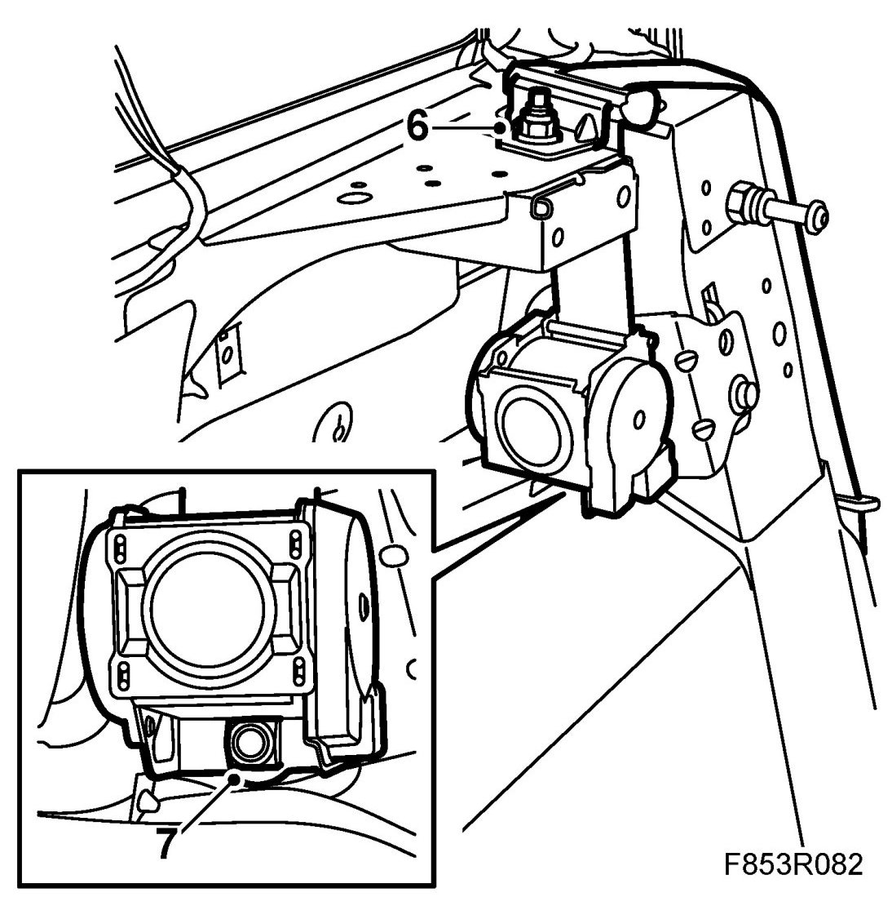
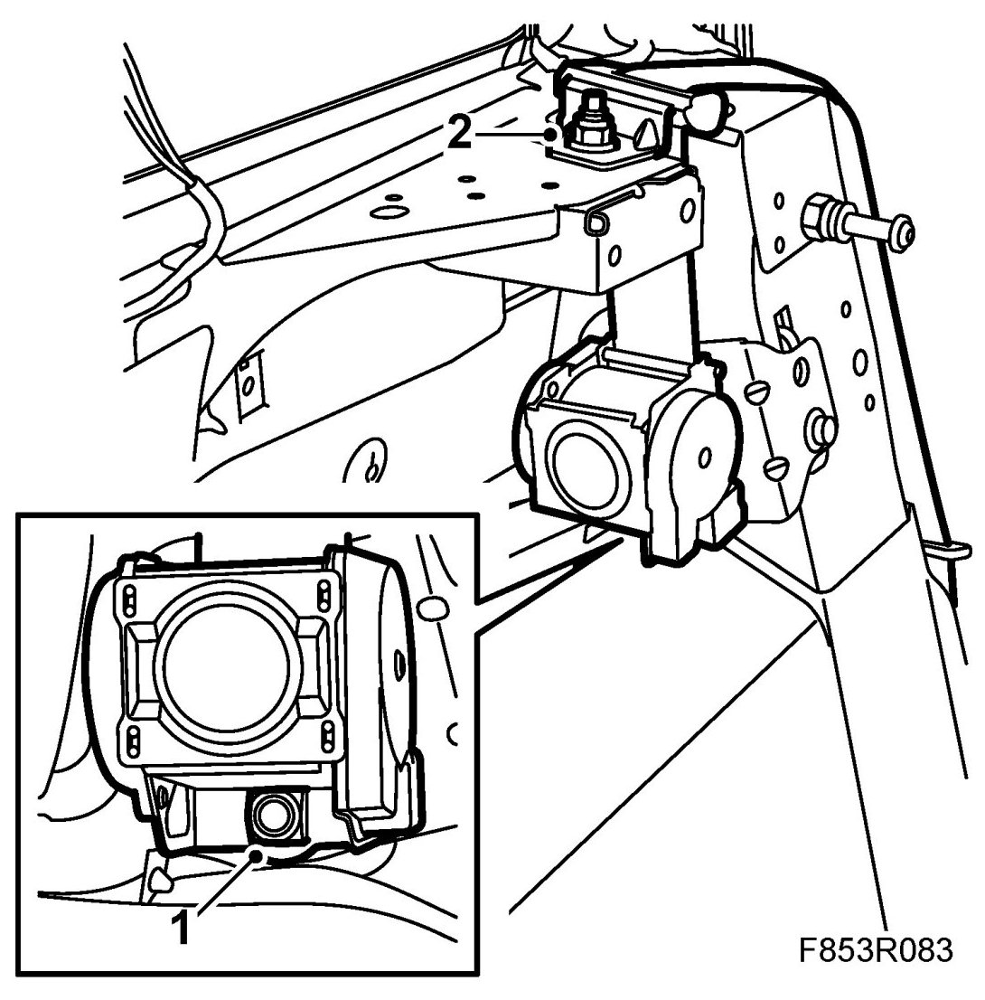
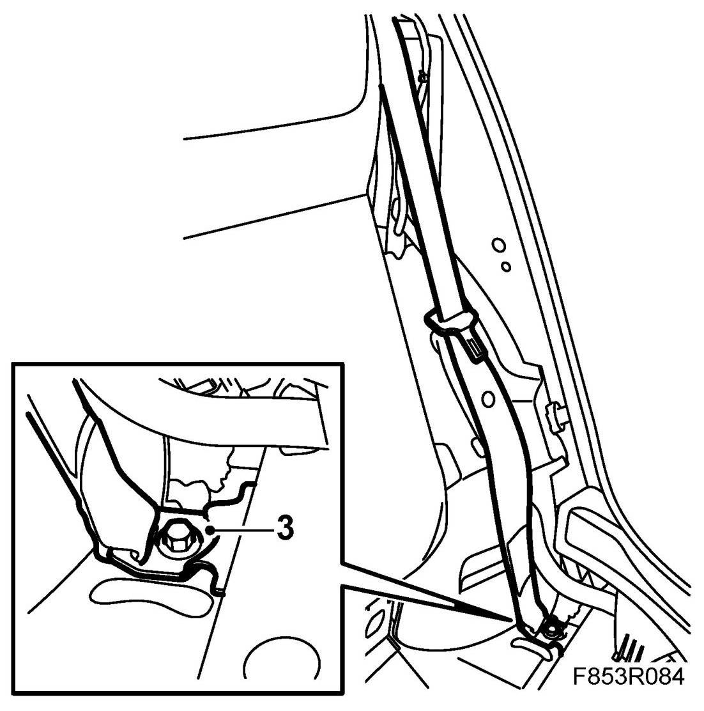

Rear Inertia Reel, 5D
Rear Inertia Reel, 5D
To remove
1. Remove C-pillar trim, 5D.
2. Remove Rear seat cushion, 4D, 5D
3. Remove Side bolster, 5D.
4. Remove Rear side trim, 5D.
5. Remove the lower seatbelt anchor point.
6. Remove the upper seatbelt anchor point.

7. Dismantle the inertia reel and lift out the inertia reel.
To fit
1. Fit the inertia reel by putting it into position.
Tightening torque 37 Nm (27 lbf ft)

2. Fit the upper seatbelt anchor point.
Tightening torque 37 Nm (27 lbf ft)
3. Fit the lower seatbelt anchor point. Make sure the belt is not twisted.
Tightening torque 37 Nm (27 lbf ft)

4. Fit Rear seat cushion, 4D, 5D
5. Fit Rear side trim, 5D.
6. Fit Side blister, 5D. Insert the belt into the mounting.
7. Fit C-pillar trim, 5D.
8. Check that the belt is positioned correctly and not twisted.
9. Check the operation of the seat belt.